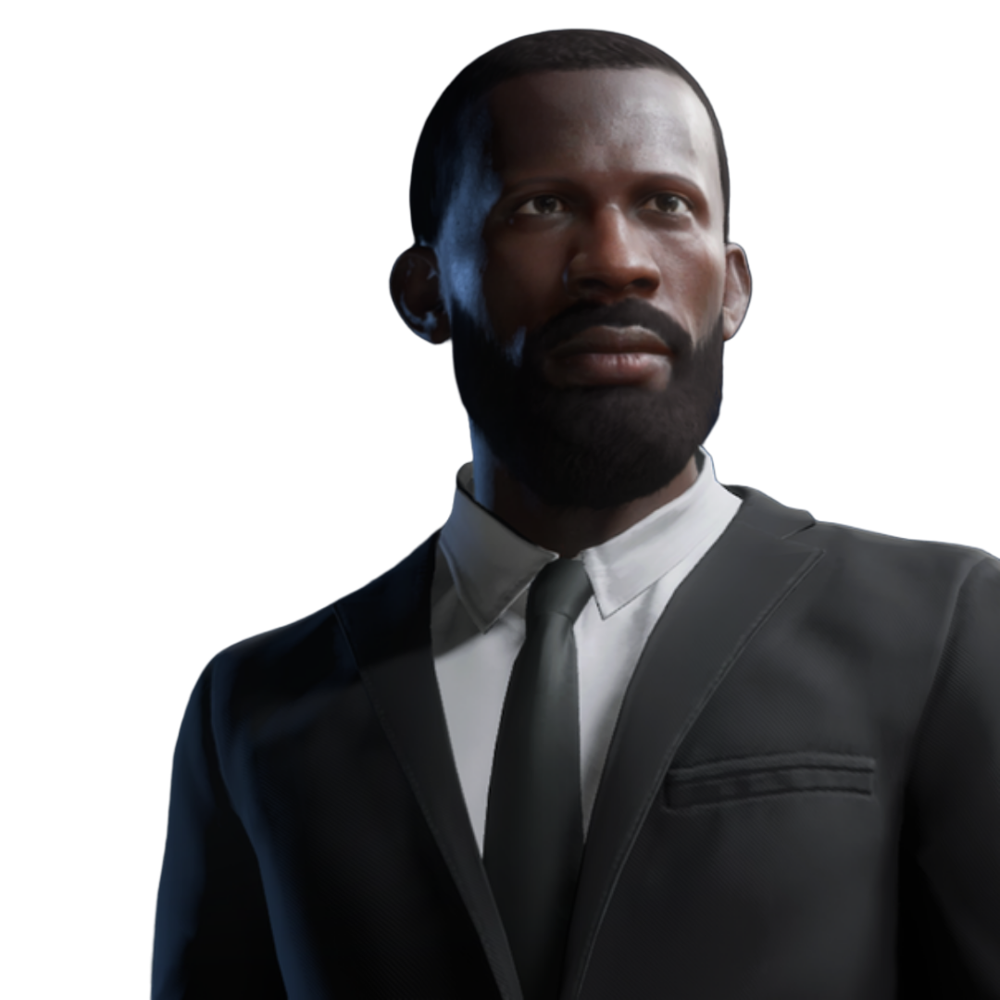
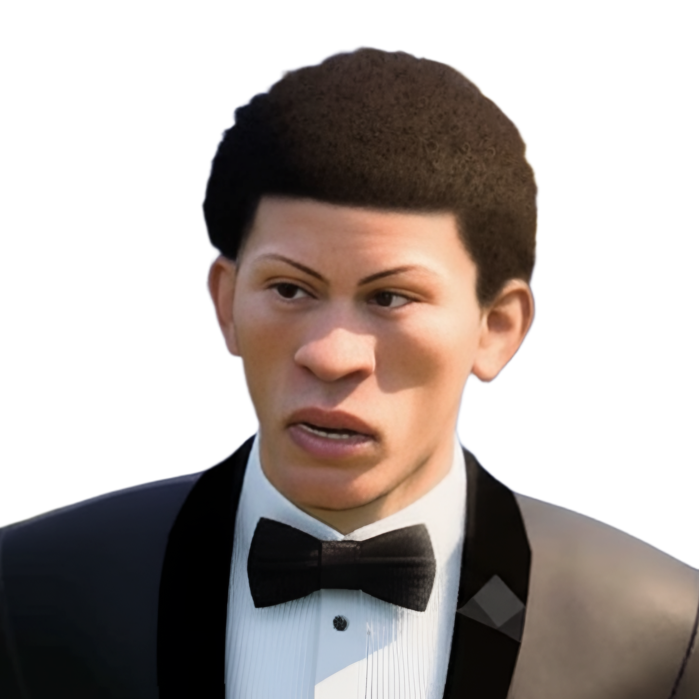
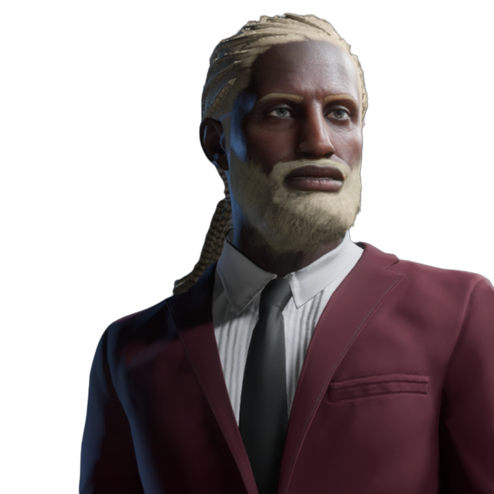
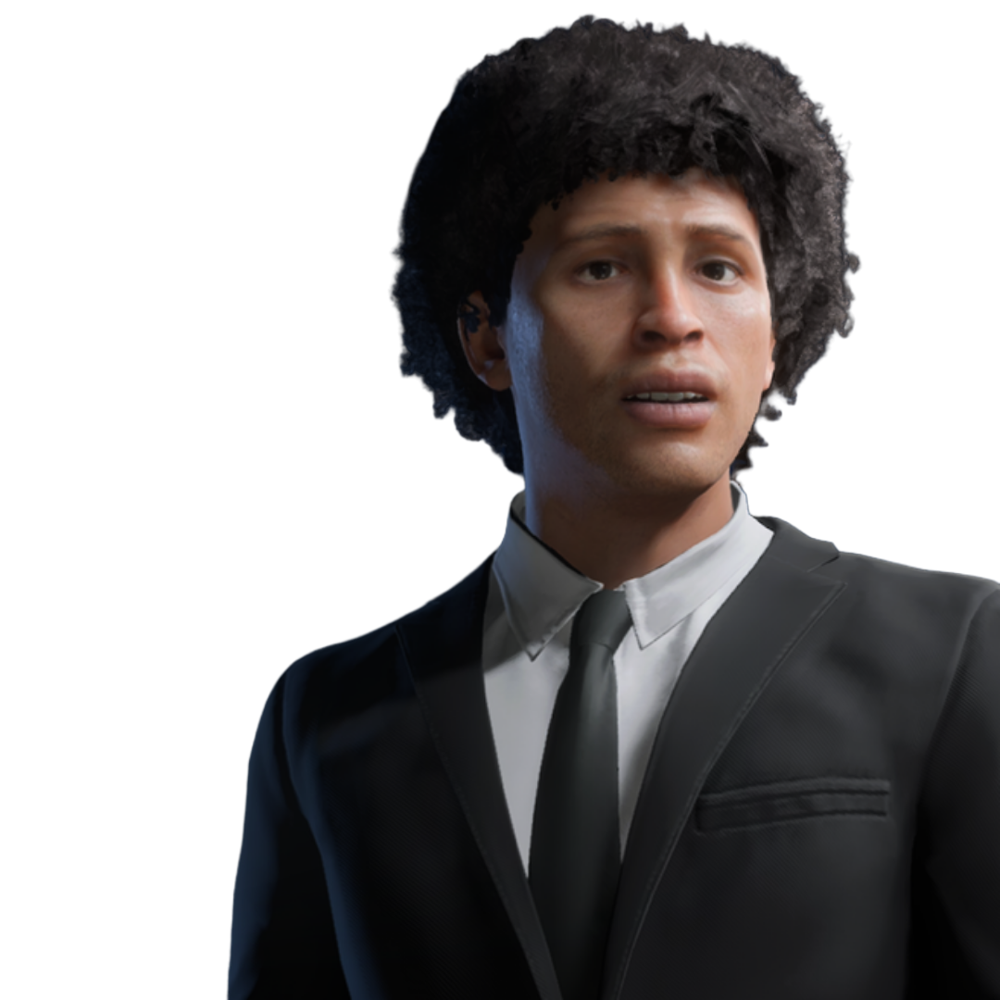
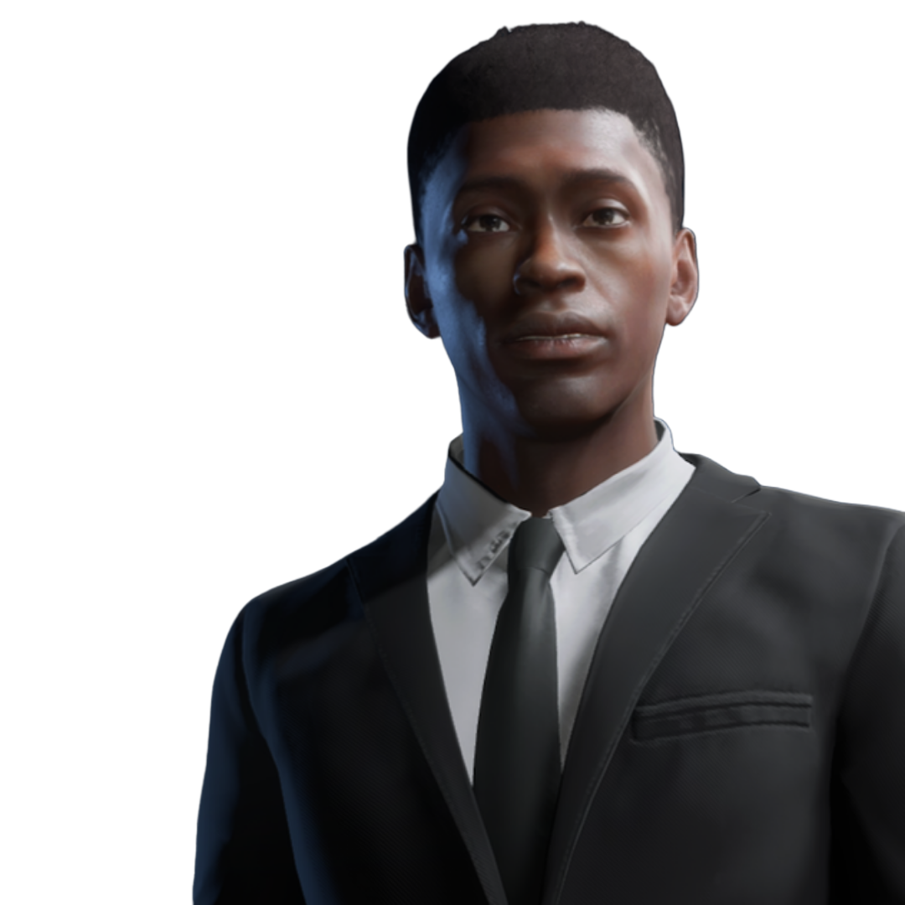
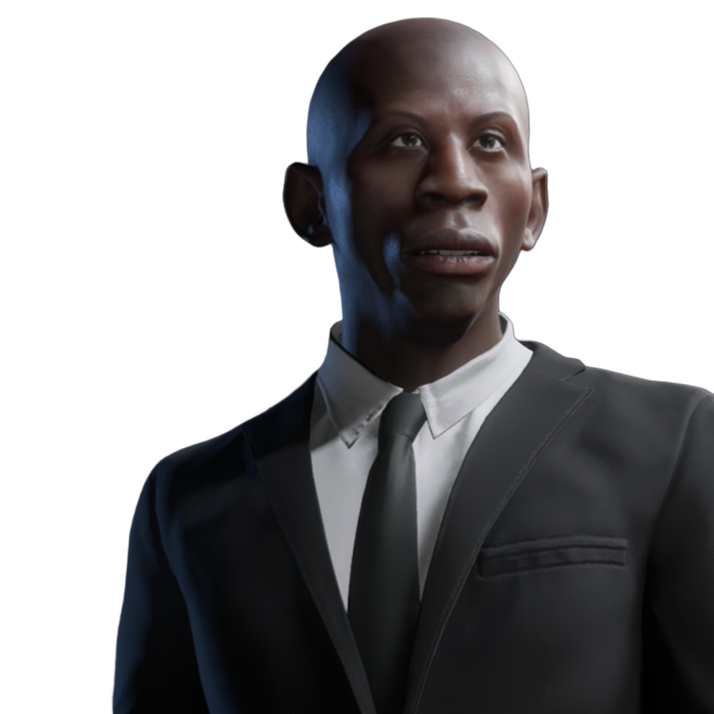
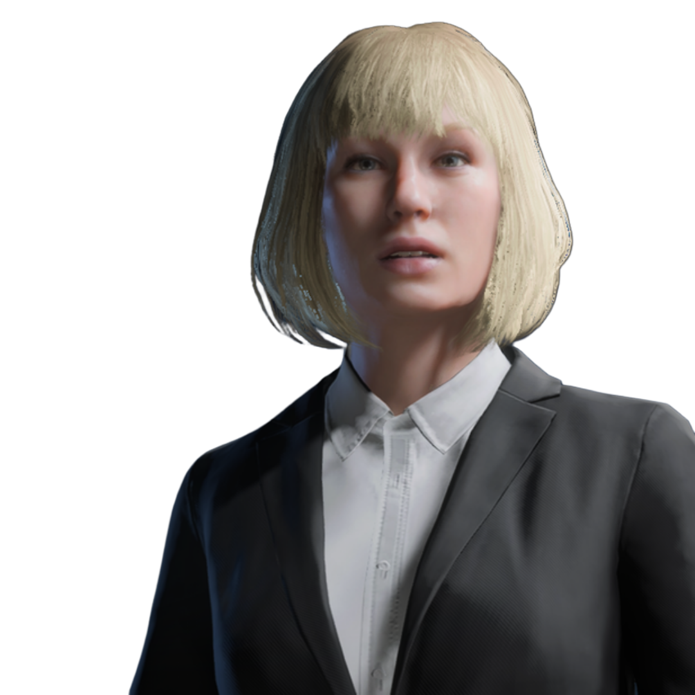
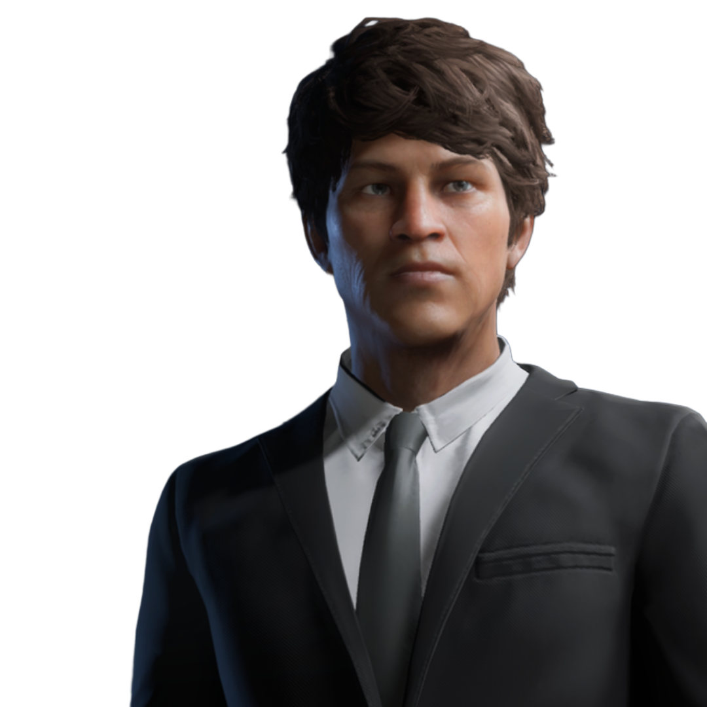
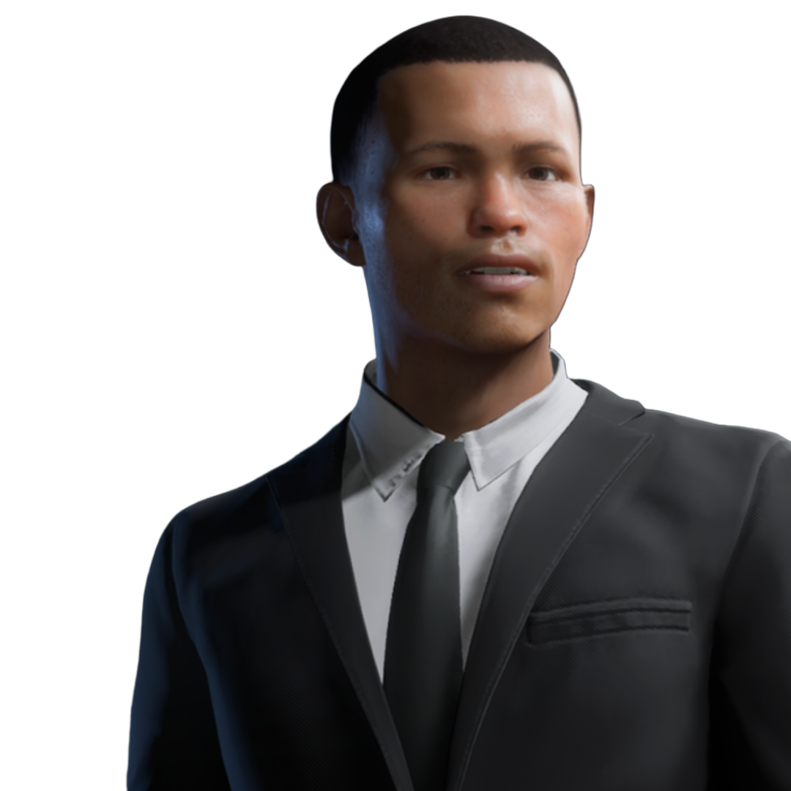

Participe da Votação da FIFA Ballon D'or™
Junte-se aos jornalistas mais renomados do mundo na ilustre escolha do verdadeiro FIFA Ballon Ballon D'or™ entre 10 nomes históricos da Jornada Pro Clubs TDW
Confira os 10 indicados ao prêmio, e logo após, classifique-os de 1 à 10 para marcar sua participação na premiação:

Delegado Da Cunha
Da Cunha, controlado por Ian, foi um grande jogador, top-scorer, conhecido por sua frieza e brutalidade em frente ao gol.

Hori
Hori, controlado por Luis, foi um jogador muito diferenciado, com grande versatilidade e ousadia, que marcou uma passagem muito vitoriosa, mas polêmica, com exibições que dividem opiniões.

Jacaré
Jacaré, controlado por Renato, foi um jogador histórico que presenciou grande parte da trajetória do clube, se tornando uma lenda entre os torcedores por sua entrega inabalável ao sucesso da TDW.

Maradona
Maradona, controlado por Fernando, foi um histórico jogador que se consolidou como uma das lendas da história do clube ao realizar feitos e jogadas inigualáveis que trouxeram muita alegria aos primeiros torcedores.
Microsony
Microsony, controlada por Ian, foi uma jogadora excepcional que marcou época com uma passagem quebradora de recordes com letalidade e precisão nunca antes vistas na história do futebol.

Pelé
Pelé, controlado por Raphael, foi um grandioso jogador que fez história no clube sendo um dos maiores artilheiros que o time já viu, proporcionando incontáveis gols de todos os jeitos imagináveis.

Ratanabá
Ratanabá, controlado por Fernando, é um jogador monstruoso que fez história com habilidades destruidoras e uma força de vontade inabalável, contribuindo para o sucesso do time com centenas de belos gols e assistências.

Taylor Swift
Taylor, controlada por Renato, foi uma jogadora divônica responsável por causar pesadelos em todos os times que enfrentou. Durante sua histórica estadia no clube, tornou-se uma lenda, uma máquina imparável de fazer gols.

Waldir Braz
Waldir, controlado por Guilherme, foi um jogador extraordinário, de uma genialidade fora do comum, com dribles de tirar o folego e capazes de confundir qualquer marcador, encantando a todos em campo. É visto como uma das maiores lendas do clube.

Zikaum
Zikaum, controlado por Renato, foi um jogador incrível, maior artilheiro da história do clube, conhecido por sua raça incansável, poder de decisão e amor à camisa. Com atuações emocionantes, foi quem mais despertou o sentimento da torcida, tornando-se eterno no coração do time.
Certamente, todos estes grandes jogadores são merecedores de disputar esse espaço, sendo os melhores jogadores que já passaram pelo Jogo de Todo Mundo™. A classificação de 1 à 10 lhes renderão pontos, que serão calculados para gerar o ranking que dará à um deles o prêmio de FIFA Ballon D'or™.
Selecione seu Top 10 para o
FIFA BALLON'DOR™
time enviado com sucesso!
preencha os 11 jogadores